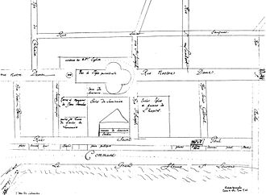

The history of Montreal, located in Quebec, Canada, spans about 8,000 years. At the time of European contact, the area was inhabited by the St. Lawrence Iroquoians, a discrete and distinct group of Iroquoian-speaking indigenous people. they spoke Laurentian. Jacques Cartier became the first European to reach the area now known as Montreal in 1535 when he entered the village of Hochelaga on the Island of Montreal while in search of a passage to Asia during the Age of Exploration. Seventy years later, Samuel de Champlain unsuccessfully tried to create a fur trading post but the Mohawk of the Iroquois defended what they had been using as their hunting grounds.
A mission named Ville Marie was built in 1642 as part of a project to create a French colonial empire. Ville Marie became a centre for the fur trade and French expansion into New France until 1760, when it was surrendered to the British army, following the French defeat of the Battle of the Plains of Abraham. British immigration expanded the city. The city's golden era of fur trading began with the advent of the locally owned North West Company.
Montreal officially became a city in 1832. The city's growth was spurred by the opening of the Lachine Canal and Montreal was the capital of the United Province of Canada from 1844 to 1849. Growth continued and by 1860 Montreal was the largest city in British North America and the undisputed economic and cultural centre of Canada. Annexation of neighboring towns between 1883 and 1918 changed Montreal back to a mostly Francophone city. The Great Depression in Canada brought unemployment to the city, but this waned in the mid-1930s, and skyscrapers began to be built.
Pre-contact
The area known today as Montreal had been inhabited by indigenous peoples for some 8,000 years, while the oldest known artifact found in Montreal proper is about 4,000 years old.[2] About 1000 CE, nomadic Iroquoian and other peoples around the Great Lakes began to adopt the cultivation of maize and more settled lifestyles. Some settled along the fertile St. Lawrence River, where fishing and hunting in nearby forests supported a full diet. By the 14th century, the people had built fortified villages similar to those described by Cartier on his later visit.
The Arrival of the French
The first European to reach the area was Jacques Cartier on October 2, 1535. Cartier visited the villages of Hochelaga (on Montreal Island) and Stadacona (near modern Quebec City), and noted others in the valley which he did not name. He recorded about 200 words of the people's language
Seventy years after Cartier, explorer Samuel de Champlain traveled to Hochelaga, but the village no longer existed, nor was there sign of any human habitation in the valley. At times historians theorized that the people migrated west to the Great Lakes (or were pushed out by conflict with other tribes, including the Huron), or suffered infectious disease. Since the 1950s, other theories have been proposed. The Mohawk had most to gain by moving up from New York into the Tadoussac area, at the confluence of the Saguenay and St. Lawrence rivers, which was controlled by local Montagnais.
Champlain decided to establish a fur trading post at Place Royal on the Island of Montreal, but the Mohawk, based mostly in present-day New York, successfully defended what had by then become their hunting grounds and paths for their war parties. It was not until 1639 that the French created a permanent settlement on the Island of Montreal, started by tax collector Jérôme le Royer de la Dauversière. Under the authority of the Roman Catholic Société Notre-Dame de Montréal, missionaries Paul Chomedey de Maisonneuve, Jeanne Mance and a few French colonists set up a mission named Ville Marie on May 17, 1642 as part of a project to create a colony dedicated to the Virgin Mary. In 1644, Jeanne Mance founded the Hôtel-Dieu, the first hospital in North America north of Mexico.
Great Depression
Unemployment was high during the Great Depression in Canada in the 1930s. Canada began to recover from the Great Depression in the mid-1930s, and real estate developers began to build skyscrapers, changing Montreal's skyline. The Sun Life Building, built in 1931, was for a time the tallest building in the British Commonwealth. During World War II its vaults were used as the hiding place for the gold bullion of the Bank of England and the British Crown Jewels.
Merger and demerger
The concept of having one municipal government for the island of Montreal was first proposed by Jean Drapeau in the 1960s. The idea was strongly opposed in many suburbs, although Rivière-des-Prairies, Saraguay (Saraguay) and Ville Saint Michel, now the Saint-Michel neighbourhood) were annexed to Montreal between 1963 and 1968. Pointe-aux-Trembles was annexed in 1982.
In 2001, the provincial government announced a plan to merge major cities with their suburbs. As of January 1, 2002, the entire Island of Montreal, home to 1.8 million people, as well as the several outlying islands that were also part of the Montreal Urban Community, were merged into a new "megacity". Some 27 suburbs as well as the former city were folded into several boroughs, named after their former cities or (in the case of parts of the former Montreal) districts.
During the 2003 provincial elections, the winning Liberal Party had promised to submit the mergers to referendums. On June 20, 2004, a number of the former cities voted to demerge from Montreal and regain their municipal status, although not with all the powers they once had. The following voted to demerge: Baie-d'Urfé, Beaconsfield, Côte Saint-Luc, Dollard-des-Ormeaux, Dorval, the uninhabited L'Île-Dorval, Hampstead, Kirkland, Montréal-Est, Montreal West, Mount Royal, Pointe-Claire, Sainte-Anne-de-Bellevue, Senneville, and Westmount. The demergers were effective on January 1, 2006.
Despite the demerger referendums held in 2004, controversy continues as some politicians note the cost of demerging. Several studies show that the recreated municipalities will incur substantial financial costs, which will require them to increase taxes (an unanticipated result for the generally wealthier English-speaking municipalities that had voted for demerger). Proponents of the demergers contest the results of such studies. They note that reports from other merged municipalities across the country that show that, contrary to their primary raison d'être, the fiscal and societal costs of mega-municipalities far exceed any projected benefit.
Origin of the name
During the early 18th century, the name of the island came to be used as the name of the town. Two 1744 maps by Nicolas Bellin identified the island as Isle de Montréal and the town as Ville-Marie; but a 1726 map refers to the town as "la ville de Montréal". The name Ville-Marie soon fell into disuse. Today it is used to refer to the Montreal borough that includes downtown
Gallery
View from Mount Royal, 1902
Wood engraving of Hochelega
Jacques Cartier Square 1900

Montreal map drawn by François Dollier de Casson in 1672
Palace of Justice, 1880

Lachine Canal, 1875
Montreal soup kitchen, 1931, providing meals for the homeless

René Lévesque, Paul Sauvé Arena, election night, 1973